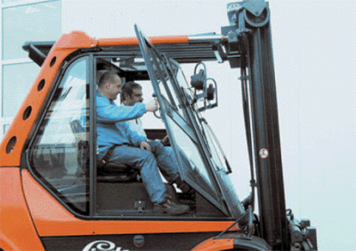
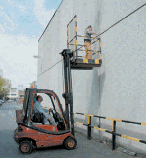
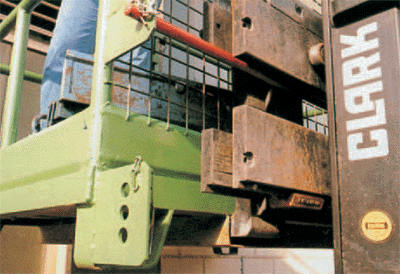
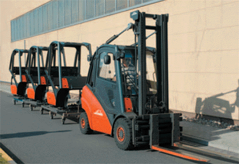
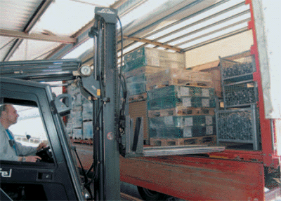
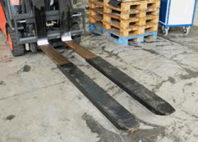
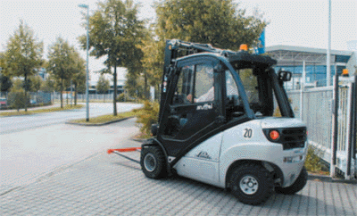

Sondereinsätze darf der Gabelstaplerfahrer nur auf besondere Anweisung des verantwortlichen Vorgesetzten durchführen. Die Anweisungen müssen vorher durchgesprochen und in einer Betriebsanweisung festgelegt werden. Der Fahrer muss seine gesamte Erfahrung einsetzen, damit der Sondereinsatz zuverlässig und sachgerecht durchgeführt wird.
Der Fahrer darf Personen nur dann mitnehmen, wenn:

Die Mitnahme von Personen, beispielsweise als Fahrlehrer bei der Ausbildung oder als Helfer für Be- und Entladearbeiten, ist durch den Unternehmer in einer Betriebsanweisung zu regeln.
Da der Gabelstapler kein Taxi ist, ist die Mitnahme von Personen auf das notwendige Maß zu beschränken.
Während der Fahrt sind verboten:
Bedingt durch die Hubeinrichtung bietet sich der Gabelstapler als Hilfsmittel für Tätigkeiten an hoch gelegenen Stellen an. Personen dürfen mit der Hubeinrichtung aber nur auf- oder abwärts gefahren werden, wenn der Gabelstapler über eine ausreichende Tragfähigkeit verfügt, sich die Personen in einer geeigneten Arbeitsbühne befinden und dort gegen Absturz sowie Quetsch- und Schergefahren durch die Hubeinrichtung geschützt sind.
Die Tragfähigkeit des Staplers gilt als ausreichend, wenn der Hersteller in der Betriebsanleitung die Verwendung einer Arbeitsbühne als bestimmungsgemäße Verwendung vorgesehen hat oder die Bodenfläche der Arbeitsbühne die Abmessungen einer Europalette (1200 mm x 800 mm) nicht überschreitet, sich der Standplatz der mitfahrenden Person in Höhe der Gabelzinken befindet und die Tragfähigkeit des Gabelstaplers mindestens das 5-fache des Lastgewichts beträgt. Das Lastgewicht setzt sich in diesem Falle aus dem Eigengewicht der Arbeitsbühne, dem Gewicht der mitfahrenden Person(en) und der Zuladung zusammen.

Die Arbeitsbühne ist zum Schutz gegen Absturz formschlüssig am Lastaufnahmemittel zu sichern (Bild 8-3) und mit einem mindestens 1 m hohen Geländer, bestehend aus Handlauf, Knie- und Fußleiste, zu versehen.
Zum Schutz gegen Quetsch- und Schergefahren durch das Hubgerüst muss auf der dem Hubgerüst zugewandten Seite der Arbeitsbühne ein mindestens 1,80 m hohes, engmaschiges Schutzgitter angebracht sein. Auf Quetsch- und Schergefahren zwischen Arbeitsbühne und festen Teilen der Umgebung ist in der Betriebsanweisung und den Unterweisungen einzugehen.
Das Verfahren des Gabelstaplers mit angehobener oder besetzter Arbeitsbühne ist nicht zulässig.

Dies gilt nicht für:
Bei angehobener Arbeitsbühne darf der Fahrer den Gabelstapler nicht verlassen. Er muss jederzeit in der Lage sein, die Arbeitsbühne herabzulassen.
Gabelstapler mit Anhänger müssen bei allen Fahrbewegungen des Zuges sicher abgebremst werden können. Deshalb darf die Anhängelast die Zugkraft des Gabelstaplers nicht überschreiten.
Die Anhängelast besteht aus dem Gewicht des Anhängers und der Ladung. Soweit die Zugkraft des Staplers nicht im Bereich der Kupplung angegeben ist, hat sie der Betreiber aus der Betriebsanleitung zu entnehmen oder beim Hersteller zu erfragen.
Als Faustformel gilt:

Das Entladen von Lkws, Anhängern, Wechselbrücken oder Kleintransportern mit Gabelstaplern erfolgt in den meisten Fällen seitlich (Bild 8-5). Bevor der Staplerfahrer mit der Be- oder Entladung beginnt, hat er sich davon zu überzeugen, dass diese Fahrzeuge bzw. Geräte gegen Wegrollen und Umkippen gesichert sind.

Im Wesentlichen heißt das:
Um auch die an der gegenüberliegenden Bordwand stehende Ladung sicher aufnehmen zu können, werden als Sonderzubehör hydraulisch betätigte, von der Hubgabel geführte und nach vorn bewegliche Schub- oder Teleskopgabeln angeboten. Diese erleichtern die Be- oder Entladung wesentlich (Bild 8-6).

Wird beim Be- oder Entladen die Ladefläche befahren, sind geeignete Ladebrücken zu verwenden. Diese müssen ausreichend breit, tragfähig, rutschhemmend und gegen Verschieben gesichert sein. Außerdem ist darauf zu achten, dass die Ladefläche ausreichend tragfähig ist, um das Gewicht der Ladung und des Staplers sicher aufzunehmen.
Für Gabelstapler, die auf öffentlichen Straßen verkehren, gelten auch die behördlichen Bestimmungen über den Straßenverkehr. Straßen sind öffentlich, wenn sie von jedermann benutzt werden, also auch Plätze und Bürgersteige vor dem Unternehmen.
Da Gabelstapler in der Regel nicht den Bauvorschriften der Straßenverkehrszulassungsordnung entsprechen, wird eine Ausnahmegenehmigung gemäß § 70 StVZO von der Bezirksregierung mit anschließender Erlaubnis gemäß § 29 Absatz 3 StVO vom zuständigen Straßenverkehrsamt benötigt.
Wenn ein Gabelstapler auf öffentlichen Straßen benutzt werden soll, muss er mit einer Sonderausstattung für den Verkehr auf öffentlichen Straßen ausgerüstet sein (Bild 8-8).
Diese besteht aus:

Zusätzlich ist seit 01.01.1999 bei der Teilnahme am Straßenverkehr die Fahrerlaubnis-Verordnung zu beachten, die die 2. EU-Führerscheinrichtlinie in deutsches Recht umsetzt.
Danach ist wie bisher für das Fahren mit Flurförderzeugen mit einer bauartbedingten Höchstgeschwindigkeit von nicht mehr als 6 km/h keine Fahrerlaubnis erforderlich.
Für alle anderen Flurförderzeuge die öffentliche Straßen befahren, müssen die Fahrer eine entsprechende Fahrerlaubnis besitzen.
Welcher Führerschein im Einzelfall notwendig ist, hängt vom Gesamtgewicht, der zulässigen Höchstgeschwindigkeit und der Anhängerlast des Staplers ab (siehe Bild 8-7).
Anbaugerät (z. B. Schubgabel, Fassgreifer usw.) und Gabelstapler müssen aufeinander abgestimmt sein. Das betrifft besonders die Befestigung an den Gabeln oder Gabelträgern sowie den Anschluss an das Hydrauliksystem. Außerdem muss die Standsicherheit erhalten bleiben.
Weiterhin ist zu beachten, dass durch das Gewicht und die Abmessungen des Anbaugerätes die verbleibende Nutzlast des Gabelstaplers herabgesetzt wird. Aus diesem Grund besitzen die Anbaugeräte ein eigenes Lastschwerpunktdiagramm. Es ist beim Umgang mit diesen zu verwenden.
Vor der Verwendung eines Anbaugerätes hat sich der Fahrer zu vergewissern, ob das Anbaugerät bestimmungsgemäß befestigt und angeschlossen ist.